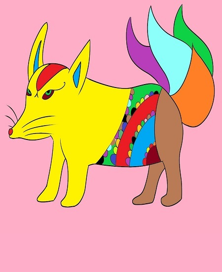

Tipos
Los alebrijes de papel maché: ¿una manifestación de arte popular?
Algunos consideran que la versión de Pedro Linares López fue una realidad histórica, al cabo que otros piensan que se trata de una leyenda, de una expresión artística que emana de la tradición, elementos que caracterizan el arte popular.
Además, la diversidad de formatos-figuras y la peculiaridad de los mercados tradicionales, en lo que se comercializan los alebrijes, le otorgan ese peculiar sello de arte popular.
Además, los alebrijes son, íntegramente, exclusivos, es decir, ninguno se parece a otro. En otras palabras, no se producen en serie en las fábricas, lo que les brinda un componente de individualidad a cada uno de los creadores.
Algo que llama, verdaderamente, la atención de estas creaciones individuales, es que los alebrijes de papel maché disponen de alas, para “no olvidar que son producto de los sueños” y, de garras, para “aferrarse a la tierra y no desvanecerse en los sueños mismos”.
En tal virtud, tenemos que, en la realidad pragmática, la inmensa mayoría de los alebrijes tienen garras y alas. Todas las otras características artísticas de cada creación, surgen de la imaginación de cada autor.

Alebrijes de madera
Los alebrijes forman parte de la cultura y de la tradición mexicanas, sin mencionar que cuando una persona lleva una pieza de este trabajo a su casa o a su país, también lleva un pequeño trozo de lo que significa el arte y el trabajo del artesano mexicano. En otras secciones hemos hablado un poco sobre la forma en la que podemos hacer nuestras criaturas con una de las técnicas más importantes, llamada papel maché, sin embargo, también hemos mencionado que existe otra técnica popular muy propia de los artesanos de Oaxaca en la cual se utiliza la madera de un árbol en particular y del cual se logran crear todas y cada una de las criaturas más asombrosas del mundo. Los alebrijes de madera, al igual que aquellos que se fabrican en papel maché, son muy reconocidos en todo el mundo por el gran trabajo y dedicación con el cual se elabora cada pieza original. El tratamiento y la transformación que recibe la madera, es parte invaluable de la riqueza cultural, no solo de nuestro país, sino también del mundo. Para lograr tener estos alebrijes hechos en madera, es necesario realizar un proceso, por esta razón, hoy queremos hablarte un poco sobre la forma en la que es posible obtener estas criaturas por medio de esta técnica tradicional muy importante.

Te recomiendo que busques en Amo Alebrijes ya que es una página muy completa donde te puede orientar un poco más sobre "Los Alebrijes"